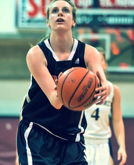

Our Young Athletes Should Read This

The Student Athlete Mental Health Initiative (SAMHI) Champion Series features student-athletes who have experienced mental health illness. This is a guest post from student-athlete and SAMHI Co-Founder, Krista Van Slingerland. The Northside Minor Basketball Association salutes Ms. Van Slingerland for her courage to speak up and supports her initiative and others out there who may see their lives in her story.
My name is Krista. I have been playing basketball competitively for 13 years now. I was the graduating female athlete of the year at my high school, I have won two provincial gold medals and three provincial silver medals. My rookie year at Carleton University (2010/2011), we went to the national tournament for the first time in the program's history. I just earned a degree in public policy. I am a sister to four brothers; I am also a survivor of mental illness and now the co-founder of the Student-Athlete Mental Health Initiative.
This is my story.
We tend to confine people to a single identity. At the beginning of my career with Carleton, I was defined by my sport. My personal worth depended on how many points I scored last night, the minutes I averaged, whether I started or not.
But then I got sick, and ever since, have felt defined by my mental illness: as the weak link, wasted athleticism, or just plain crazy.
In sport we are taught that pushing ourselves to the breaking point makes us strong. One more sprint, one more rep, one more hour in the gym. We call it mental toughness. It's a sort of blind ambition, the commitment of an athlete to give everything and anything to be great at their sport.
As I began my varsity basketball career, I bought in to the idea of mental toughness whole-heartedly. The success of the women's program was built on hard work. Although we were not always more skilled than our opponents, it was expected that we would outwork and out-tough them. And so, I equated my own strength and self-worth with how mentally tough I was.
The depression crept up on me. The anxiety I felt over performing well in first year grew into dark thoughts and feelings that I couldn't ignore by the end of my second season. In that time I had lost my first love, someone I looked up to for his unwavering pursuit of basketball excellence, whose family had been my largest support system throughout first year. I was devastated to have lost them. We also didn't do as well as a team that season, losing in the OUA semi-finals. I remember thinking to myself that because we lost, everything we had gone through that year, the grind of playing six days a week, of balancing homework with athletic pursuits, of weathering the emotional ups and downs of sport, wasn't worth it. Or was I just not mentally tough enough to handle it?
I started seeing a psychologist that summer. I did my due diligence and completed four months of talk therapy, but my mood wasn't improving. At the end of the summer I began taking anti-depressants as a last resort. You would never have known though, that I was emotionally struggling, because I was playing the best basketball of my life that summer. My coach told me that I was playing the calibre of basketball that could earn me a spot representing my country. Needless to say, the expectations as I entered my third season were high.
By November of third year, the depression I thought I was managing spiraled out of control. I was so anxious I couldn't sleep. I had pretty much stopped eating altogether, except for the occasional bowl of cereal and a strange new addiction to Terry's chocolate oranges. I was skinny, and weak and I didn't want anyone to touch me, which made playing basketball extremely difficult. I began stepping out of drills in practice and asking not to play in games, because I felt fragile and unable to compete at the level required of me. I thought my team would be better off without me, but I think my actions only created resentment between us. I was frustrated and angry towards my teammates on and off the court, which pushed away many of the people closest to me.
I don't remember when I started cutting my wrists with a steak knife. I do know that it was the only thing that interrupted the constant hurt, emptiness and hopelessness of ever feeling normal again. Cutting was a sort of pain that I was in control of; it was also a form of self-punishment for not performing on the court to my full potential, and for being hateful, rather than the kind and compassionate self I had seemed to have lost. The fresh pink lines across my left wrist were a cry for help, but it felt like no one was listening.
I remember the last time I set foot on the court in a Ravens' uniform. My check hit a long three in my eye and I sat the rest of the game. My dad was at that game. He had been my biggest fan and supporter throughout my career. We had spent countless hours in the gym together working on my game. He pushed me to be better, and many times when I didn't feel like working hard, I played for him. But that night, for the first time in my career, he said he'd support me if I decided to quit basketball. That was a big moment for me; I realized just how bad things had become.
I was asked to leave the team the following week. Part of me knew it would come to that. I was so obsessive about overcoming the weakness of being mentally ill, that I would never have quit, even though being part of the team at that time was making me sicker, not stronger. And so I watched the girls win their way to Nationals from the stands, and it broke my heart.
The police interrupted my suicide attempt a few months later. I'm not sure I had the courage to actually go through with it, but I was desperate to make the hurt go away. The reaction of my friends and family, those who had loved me at my worst, served as a wake up call.
At the end of it all, I found a different kind of strength: the strength to go on.
SAMHI is about protecting other athletes like me - and sadly, there are many - from struggling through mental illness unsupported. Because even though the people around me wanted to help, nobody knew how, and I didn't know what to ask for. It has become astoundingly clear that we, as an athletics community, need to start talking about mental health in sport, because mental illness can not only be career ending, but life threatening as well.